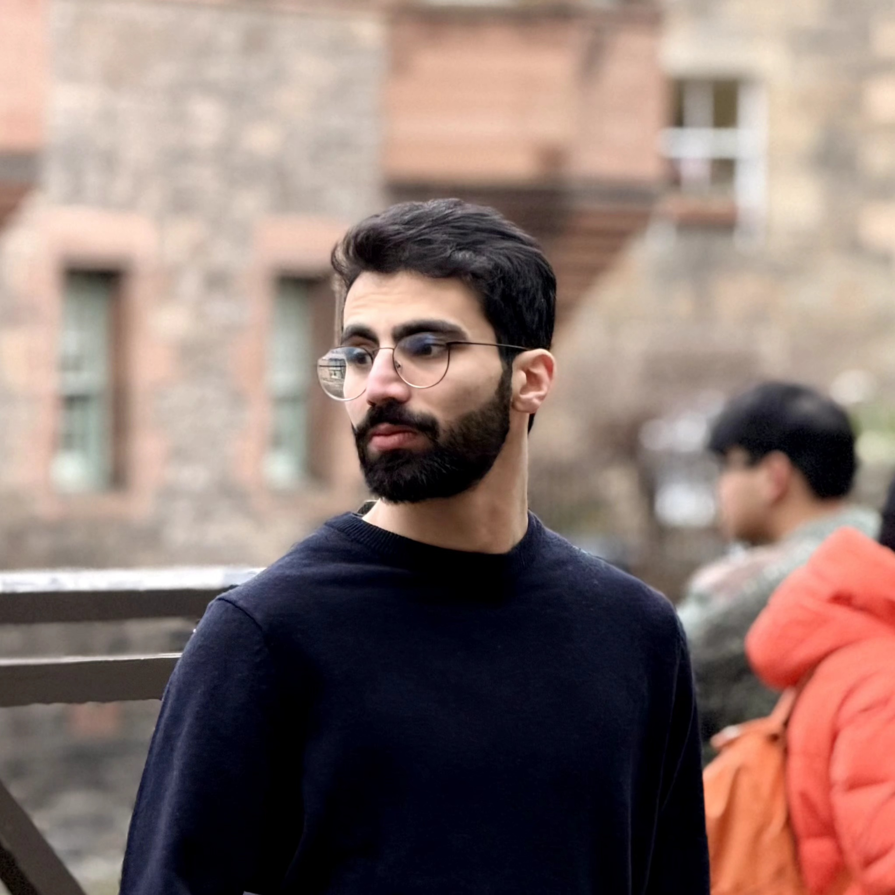
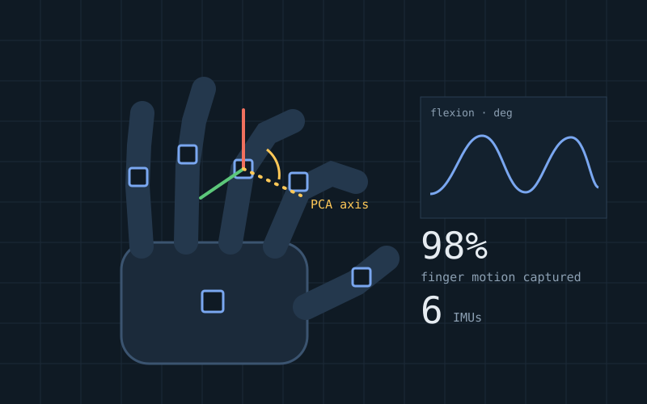
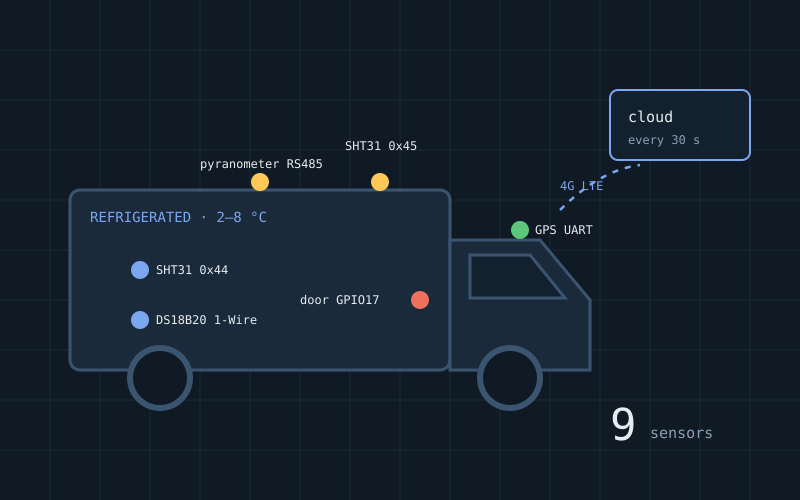
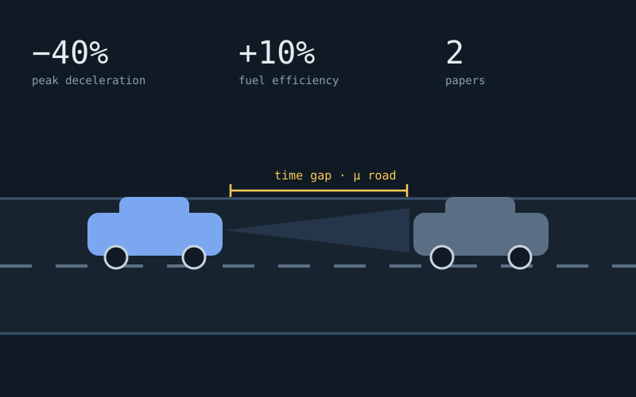
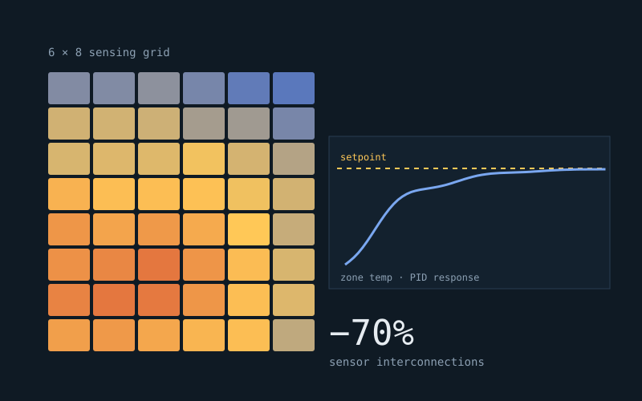

Mobile robotics · ROS 2
Jackal Autonomous Navigation
A Clearpath Jackal rebuilt to map, localise and drive itself to goals, then record everything it senses.
View project →code

Robotics & Automation Engineer
Robotic and automated systems deliver value only when they perform reliably outside the lab. I design and build such systems end to end, from mechanical design and embedded hardware to control and software, so that they operate autonomously, recover from faults and produce dependable data in real-world conditions.
/projectsA Clearpath Jackal rebuilt to map, localise and drive itself to goals, then record everything it senses.

A ring of 8 fisheye cameras and 4 Jetsons riding on the Jackal, synchronised to under 2 ms, plus 360° human tracking.

Finger range of motion from six IMUs, using PCA to find each finger's real rotation axis.

A headless Raspberry Pi box for refrigerated vans: nine sensors, 4G uplink, recovers on its own.

An Arduino sailboat that steers and trims itself to GPS waypoints, tested on real water.

An ACC strategy that adapts following distance and braking to road condition and lateral motion.

Zonal PID control of a 6×8 heated surface with gain scheduling and 70% fewer sensor connections.
/experience/skills/educationAston University · Merit Scholarship · Best Dissertation Award
Shiraz University · top 10% of class · Exceptional Talent organisation
/contactOpen to robotics, autonomy and automation roles in the UK or abroad. No visa sponsorship needed.